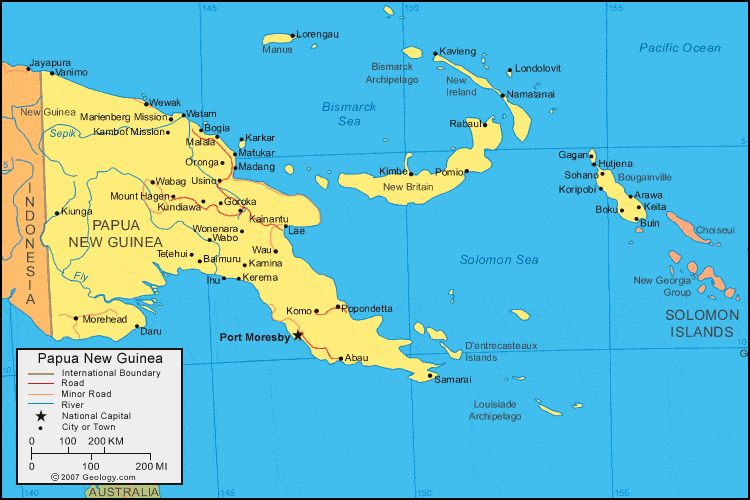

Health, wellbeing and the ability to participate in community life is enjoyed by all.
Ensure people in Papua New Guinea have access to prosthetic, orthotic and mobility device services, enabling equal participation in their family, the community they live in and improve their quality of life.
Ensure people of Papua New Guinea have access to people-centered, high quality, affordable and accessible mobility device services, irrespective of the health service delivery levels they have access to, where they live, or their personal, social or economic circumstances.
Established in 1967, the National Orthotics and Prosthetics Service (NOPS) is the primary prosthetics, orthotics and mobility device provider in Papua New Guinea. NOPS operates under the Health Facilities Standards Branch (HFSB) of the National Department of Health (NDOH) and respective Provincial Health Authorities to provide prosthetic, orthotic, wheelchair, walking aid and self-care assistive technology (AT) services (hereafter referred to as NOPS assistive technology services) to people throughout Papua New Guinea.
There are seven NOPS facilities throughout Papua New Guinea. There isone each located in the National Capital District, East New Britain Province, East Sepik Province, Milne Bay Province, Morobe Province, Simbu Province and Western Highlands Province. Each centre provides in-clinic and community outreach services. Additionally, NOPS holds close relationships with two church-based organisations delivering prosthetics and orthotics services, one facility based in West Sepik Province and another in Eastern Highlands Province.
